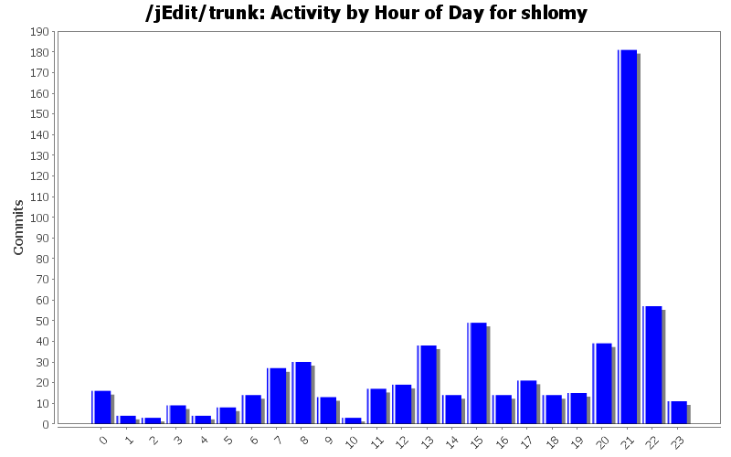
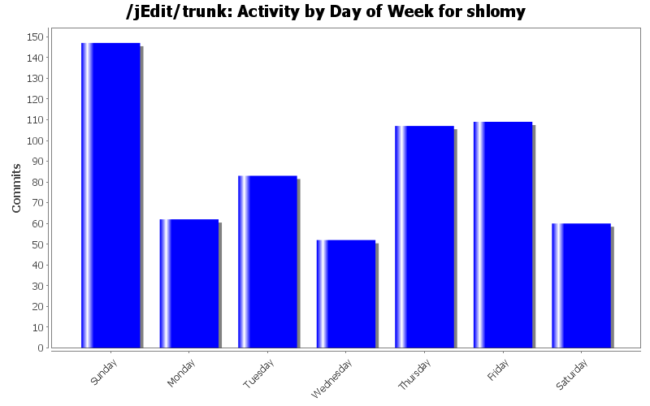
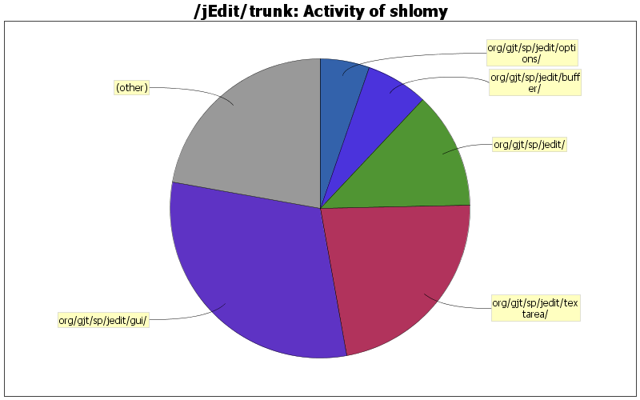

| Directory | Changes | Lines of Code | Lines per Change |
|---|---|---|---|
| Totals | 620 (100.0%) | 8928 (100.0%) | 14.4 |
| org/gjt/sp/jedit/gui/ | 81 (13.1%) | 2739 (30.7%) | 33.8 |
| org/gjt/sp/jedit/textarea/ | 86 (13.9%) | 2006 (22.5%) | 23.3 |
| org/gjt/sp/jedit/ | 150 (24.2%) | 1129 (12.6%) | 7.5 |
| org/gjt/sp/jedit/buffer/ | 22 (3.5%) | 595 (6.7%) | 27.0 |
| org/gjt/sp/jedit/options/ | 31 (5.0%) | 479 (5.4%) | 15.4 |
| org/gjt/sp/jedit/search/ | 38 (6.1%) | 382 (4.3%) | 10.0 |
| macros/Misc/ | 11 (1.8%) | 295 (3.3%) | 26.8 |
| org/gjt/sp/util/ | 16 (2.6%) | 262 (2.9%) | 16.3 |
| org/gjt/sp/jedit/menu/ | 10 (1.6%) | 236 (2.6%) | 23.6 |
| doc/ | 56 (9.0%) | 231 (2.6%) | 4.1 |
| org/gjt/sp/jedit/browser/ | 15 (2.4%) | 128 (1.4%) | 8.5 |
| doc/users-guide/ | 6 (1.0%) | 72 (0.8%) | 12.0 |
| org/gjt/sp/jedit/syntax/ | 7 (1.1%) | 66 (0.7%) | 9.4 |
| macros/C/ | 2 (0.3%) | 59 (0.7%) | 29.5 |
| org/gjt/sp/jedit/gui/statusbar/ | 4 (0.6%) | 48 (0.5%) | 12.0 |
| org/gjt/sp/jedit/bufferset/ | 4 (0.6%) | 40 (0.4%) | 10.0 |
| macros/Java/ | 2 (0.3%) | 32 (0.4%) | 16.0 |
| startup/ | 3 (0.5%) | 27 (0.3%) | 9.0 |
| org/gjt/sp/jedit/pluginmgr/ | 12 (1.9%) | 25 (0.3%) | 2.0 |
| org/gjt/sp/jedit/help/ | 7 (1.1%) | 25 (0.3%) | 3.5 |
| org/gjt/sp/jedit/msg/ | 3 (0.5%) | 14 (0.2%) | 4.6 |
| macros/Editing/ | 1 (0.2%) | 12 (0.1%) | 12.0 |
| / | 6 (1.0%) | 9 (0.1%) | 1.5 |
| org/gjt/sp/jedit/bsh/commands/ | 7 (1.1%) | 6 (0.1%) | 0.8 |
| org/jedit/localization/ | 5 (0.8%) | 5 (0.1%) | 1.0 |
| org/gjt/sp/jedit/print/ | 3 (0.5%) | 2 (0.0%) | 0.6 |
| org/gjt/sp/jedit/io/ | 8 (1.3%) | 2 (0.0%) | 0.2 |
| modes/ | 2 (0.3%) | 2 (0.0%) | 1.0 |
| org/jedit/options/ | 3 (0.5%) | 0 (0.0%) | 0.0 |
| org/jedit/keymap/ | 1 (0.2%) | 0 (0.0%) | 0.0 |
| org/gjt/sp/jedit/proto/jeditresource/ | 1 (0.2%) | 0 (0.0%) | 0.0 |
| org/gjt/sp/jedit/icons/themes/tango/22x22/actions/ | 4 (0.6%) | 0 (0.0%) | 0.0 |
| org/gjt/sp/jedit/icons/themes/classic/22x22/actions/ | 4 (0.6%) | 0 (0.0%) | 0.0 |
| org/gjt/sp/jedit/bufferio/ | 1 (0.2%) | 0 (0.0%) | 0.0 |
| org/gjt/sp/jedit/bsh/ | 2 (0.3%) | 0 (0.0%) | 0.0 |
| jars/QuickNotepad/ | 1 (0.2%) | 0 (0.0%) | 0.0 |
| jars/MacOSX/ | 1 (0.2%) | 0 (0.0%) | 0.0 |
| installer/ | 3 (0.5%) | 0 (0.0%) | 0.0 |
| doc/tips/ | 1 (0.2%) | 0 (0.0%) | 0.0 |

Committed patch #3607873 by Marc Häfner. Thanks Marc!
This patch fixes cursor misplacement with auto-indent.
17 lines of code changed in 1 file:
Some more suggestions from IntelliJ...
0 lines of code changed in 19 files:
Some more enhancements suggested by IntelliJIDEA.
0 lines of code changed in 27 files:
Replaced many "for" loops with "for each" with IntelliJIDEA's code inspection tool.
Kept some where the index may be useful for debugging (and also some others where it doesn't, because the list is too long...).
0 lines of code changed in 50 files:
Some more tiny fixes suggested by IntelliJIDEA's code inspection tool.
0 lines of code changed in 16 files:
Added corrections of tiny issues reported by IntelliJIDEA's code inspection tool.
19 lines of code changed in 4 files:
Get rid of a false check that the buffer is editable before turning on elastic tabstops. This check existed in the initial implementation of the elastic tabstops, when the feature actually modified the buffer, but it no longer does that.
4 lines of code changed in 1 file:
Removed 'test' from the dependencies of 'build', since it causes the build to fail on Windows ('test' comes after compilation and fails, before the jar file is created from the class files).
1 lines of code changed in 1 file:
Use a separate property (search.word.bar) for the "whole word search" in the search bar. The Search dialog label contains also the mnemonic, which is not needed (and takes redundant space on screen) in the search bar.
9 lines of code changed in 7 files:
When choosing 'Global Options...' from the menu, the Global Options should be opened, not the last opened tab in the combined dialog.
2 lines of code changed in 1 file:
Fixed sample code lines in plugin documentation.
2 lines of code changed in 1 file:
Fixed SF bug #3163058: middle mouse button paste doesn't respect gutter selection
12 lines of code changed in 2 files:
Reverted change from revision 19847, which broke scrolling when the caret goes outside the screen, e.g. by typing at the end of the visible area (right or bottom).
5 lines of code changed in 4 files:
Added a tooltips to the recent files, showing the path. The status bar may be hidden if the recent file list is long.
1 lines of code changed in 1 file:
Reverted my previous change for allowing L&F changes to be effective immediately, as it still causes problems.
0 lines of code changed in 1 file:
Allow changes to the L&F during runtime to be effective immediately, rather than having to wait for next restart.
0 lines of code changed in 1 file:
Reverted a debugging change I mistakenly checked-in as part of my deadlock fix.
3 lines of code changed in 1 file:
Antoher bug fix
3 lines of code changed in 1 file:
Added a bug fix
3 lines of code changed in 1 file:
Avoid a deadlock when multiple files are dragged into jEdit.
The problem was that the transfer handler invoked multiple "jEdit.openFile" in worker threads.
jEdit.openFile takes the bufferListLock during the loading, and eventually needs to send an EditBus message on the EDT.
If the EDT somehow needs the bufferListLock (e.g. saving the perspective) during this loading, there's a deadlock:
The EDT waits for the work thread to release the bufferListLock, and the work thread is waiting for the EDT (to send the EditBus message).
The current fix is simply to run jEdit.openFile in the EDT.
20 lines of code changed in 2 files:
(238 more)